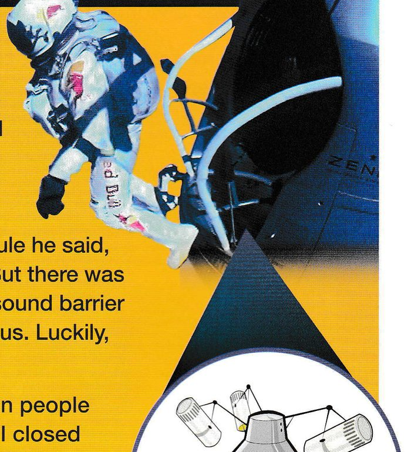
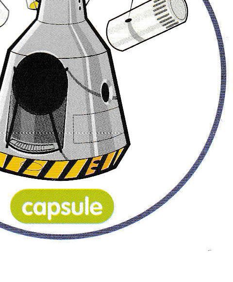

by Viktoria Syuzyova

by Viktoria Syuzyova
On 14th October, 2012, Felix Baumgartner jumped from space using only a parachute. He travelled faster than the speed of sound. He flew 39 km into the sky in a special capsule and then he prepared to jump. He was checking his spacesuit when he discovered a problem with his helmet. However, he decided to continue. While he was standing on the edge of the capsule he said, ‘I’m coming home now.’ And then he jumped. But there was another problem. He was passing through the sound barrier when he started to spin. This was very dangerous. Luckily, he was able to stop spinning and landed safely.
When he jumped from the capsule, eight million people were watching on YouTube. One person said, ‘I closed my eyes while he was stepping off the capsule. It was terrifying.’ Another said, ‘I was watching music videos when I saw Felix jump. Incredible!’

